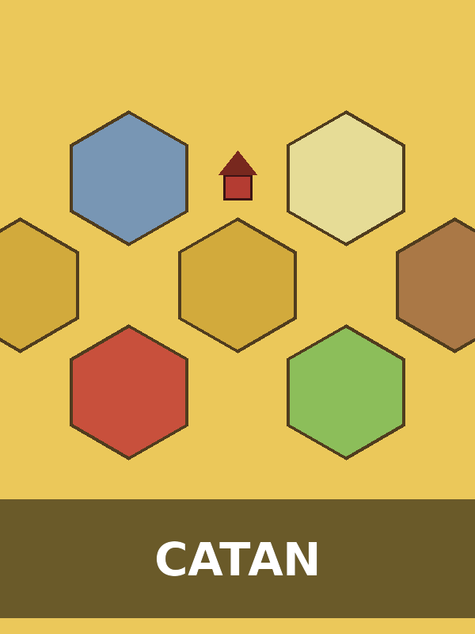

Catan
Jugadores: 3 a 4 | Duración: 60 a 90 minutos
Un clásico moderno en el que cada jugador coloniza una isla dividida en hexágonos de recursos. Hay que negociar, construir rutas y poblados, y administrar bien los recursos para llegar primero a los puntos de victoria. Ideal para quienes disfrutan de la negociación y la planificación a mediano plazo.
Descargar reglamento (PDF)